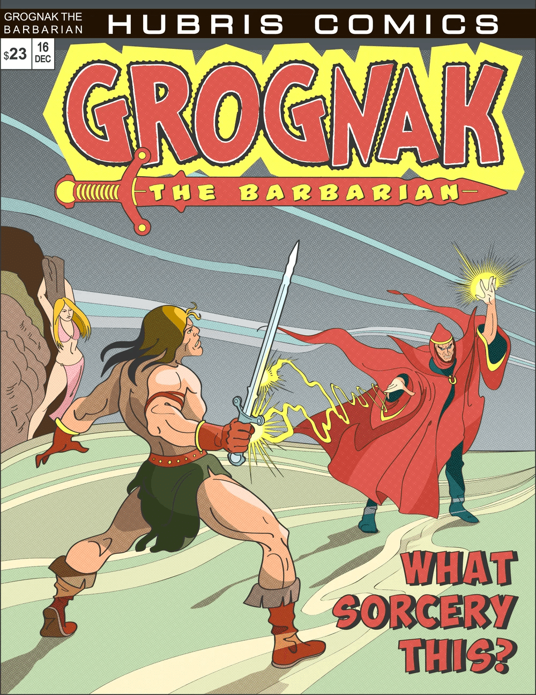
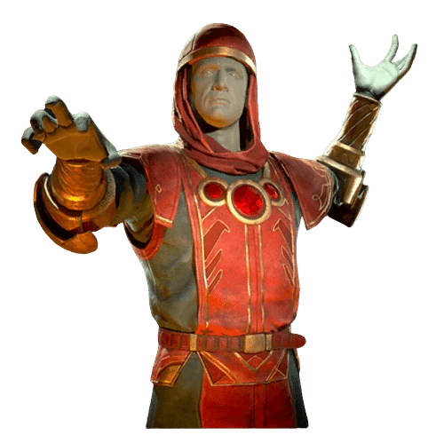
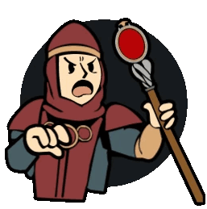

グレロック
DATE: 2026/1/18
グレロックは、ヒューブリス・コミックによって生み出された架空のキャラクターであり、『グログナックバーバリアン』シリーズに登場する悪役です。
背景
強力な魔術師であるグレロックは、コミックシリーズ『グログナックバーバリアン』における再登場の悪役であり、同シリーズを基にしたいくつかのビデオゲーム化作品においては主要な敵役を務めています。
ベータ版の『Reign of Grelok（グレロックの支配）』では、グレロックは山を囲むいくつかの大きな村を占領し、グログナックは彼を倒すために旅立ちました。
グレロックはまた、個人を若返らせたり、ゾンビに変えたりする力を持っていました。
その後、グレロックはグログナックによって倒され、世界に平和が戻りました。

備考
『野蛮人グログナック』シリーズの別のタイムラインと思われる物語では、グログナックがその地域の王となりました。
この宇宙ではグレロックは殺害されており、王となったグログナックの玉座にはグレロックの髑髏とフードが飾られています。
登場作品
グレロックは『Fallout 3』で言及されています。
彼は『Fallout 4』および『Fallout 76』のホロテープゲーム『グログナック＆ルビー遺跡』のメインの悪役でもあり、Fallout TVシリーズ シーズン1 第1話「始まり」のテレビ映像にもわずかに登場します。
また、『Fallout 76』のアトミック・ショップのアイテムとしても登場しています。

感想
宿敵グレロック、グログナックの物語には欠かせない邪悪な存在ですね！
王道すぎる悪役感: 強大な魔法を使い、死者をゾンビとして蘇らせ、村々を支配するという、まさに「これぞファンタジーの悪役」という設定が魅力的です。
グログナックとの因縁: メインの物語では倒される運命にありますが、別の時間軸ではグログナックに殺されてその髑髏が玉座に飾られるという、なかなかバイオレンスな結末を迎えているのもFalloutらしい皮肉が効いています。
ゲーム内の楽しみ: ホロテープゲームで実際に彼と戦えるので、プレイヤーにとっても非常に馴染み深いキャラクターですよね。
宿敵グレロック、グログナックの物語には欠かせない邪悪な存在ですね！
王道すぎる悪役感: 強大な魔法を使い、死者をゾンビとして蘇らせ、村々を支配するという、まさに「これぞファンタジーの悪役」という設定が魅力的です。
グログナックとの因縁: メインの物語では倒される運命にありますが、別の時間軸ではグログナックに殺されてその髑髏が玉座に飾られるという、なかなかバイオレンスな結末を迎えているのもFalloutらしい皮肉が効いています。
ゲーム内の楽しみ: ホロテープゲームで実際に彼と戦えるので、プレイヤーにとっても非常に馴染み深いキャラクターですよね。

This article uses material from the “Endor” article on the Fallout wiki at Fandom and is licensed under the Creative Commons Attribution-Share Alike License.
TAGS: #Fallout76#Fallout4#Fallout3#Lore